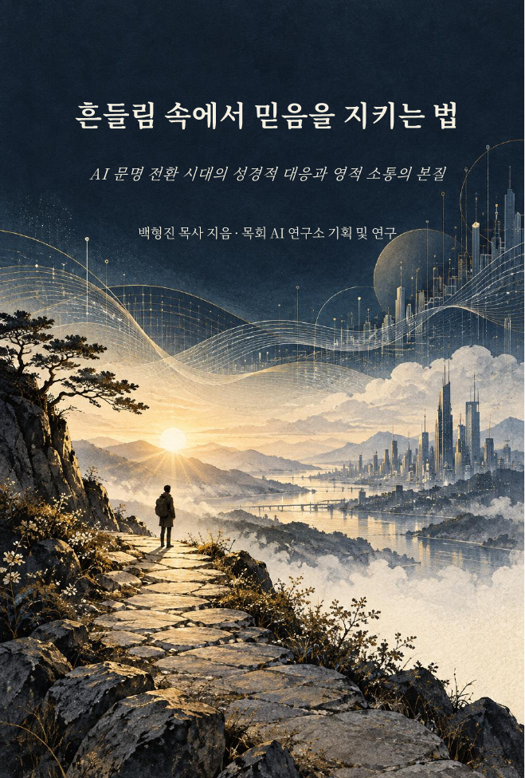

10월 월간 매거진
AI 대격변기, 목회자가 붙들 기준과 10월 연구소의 배움·사역 흐름을 담았습니다.
October Partner Letter · 2026
모든 AI를 알아야 할 필요는 없습니다. 변화는 정확히 관찰하되, 말씀과 사람과 공동체라는 목회의 본질을 더 분명히 붙드는 10월을 준비했습니다.
.png)
This Month at a Glance
이번 달에는 읽을거리와 실전 도구를 함께 준비했습니다. 매거진으로 큰 흐름을 보고, 필요한 자료부터 바로 활용해 보세요.
AI 대격변기, 목회자가 붙들 기준과 10월 연구소의 배움·사역 흐름을 담았습니다.
AI 문명 전환 속에서 성경적 기준과 목회의 영성을 지키는 17개의 질문을 다룹니다.
주제 한 줄에서 스토리·캐릭터·페이지·출판 데이터까지 이어지는 제작 체계입니다.
GPT·Claude·Gemini·Grok과 10월 전체 AI 흐름을 목회 현장의 언어로 정리했습니다.
October Magazine
9월 현장 이야기와 10월 교육·세미나, 신간과 파트너 자료를 한 권의 매거진으로 구성했습니다.
Director's Letter
사랑하는 파트너 목사님, 10월에도 연구소와 함께해 주셔서 진심으로 감사드립니다.
모델은 계속 바뀌고 기능은 빠르게 늘어납니다. 그러나 목회자의 기준까지 매번 바뀔 필요는 없습니다. 우리는 모든 도구를 쫓기보다 사역의 과제를 먼저 정의하고, 말씀과 사람을 더 깊이 섬기는 데 필요한 AI를 선택해야 합니다.
이번 달에는 큰 흐름을 읽는 매거진, AI 시대의 신앙과 목회를 성찰하는 책, 창작 사역을 돕는 동화 제작 OS, 그리고 주요 AI 플랫폼 동향을 준비했습니다. 하나씩 천천히 살펴보시고 목사님의 현장에 맞는 한 가지부터 적용해 보시기 바랍니다.
파트너 목사님의 질문과 현장 이야기는 다음 연구를 만드는 가장 중요한 출발점입니다. 언제든 편하게 나눠주세요.
목회 AI 연구소 소장 백형진 드림

버튼을 누르면 이 자리에서 책이 펼쳐집니다.
Partner Book · October
AI 문명 전환 시대의 성경적 대응과 영적 소통의 본질을 묻는 책입니다.
Children's Book OS
좋은 페이지를 하나씩 만드는 데서 끝나지 않고, 책 전체의 흐름과 캐릭터 일관성을 먼저 설계하는 동화 제작 시스템입니다.
AI Briefings · September–October
관심 있는 플랫폼부터 선택해 읽어보세요. 각 보고서는 업데이트, 10월 예상, 목회 활용과 프롬프트 기획안을 함께 제공합니다.
주요 AI 흐름, 영역별 변화, 10월 일정과 출처를 한눈에 확인합니다.
보고서 열기OPENAI · GPTGPT 변화의 본질과 목회 AI 연구소의 10월 교육축을 정리했습니다.
보고서 열기ANTHROPIC · CLAUDEClaude Code, Cowork, 새 모델과 목회 프롬프트 ‘말씀 비서’를 살펴봅니다.
보고서 열기GOOGLE · GEMINI9월 특이점, 10월 예상과 Gemini만의 목회적 강점을 정리했습니다.
보고서 열기XAI · GROKGrok 4.7과 Build 환경, 목회 활용 프롬프트와 운영 기획안을 확인합니다.
보고서 열기매거진으로 큰 흐름을 보고, 책이나 동화 제작 OS 중 지금 사역에 필요한 하나를 골라 실제로 사용해 보세요.
위에서 자료 선택하기Together in October
목회 AI 연구소는 10월에도 기술의 속도보다 목회의 방향을 먼저 살피며, 현장에서 실제로 쓸 수 있는 자료를 연구하고 나누겠습니다.